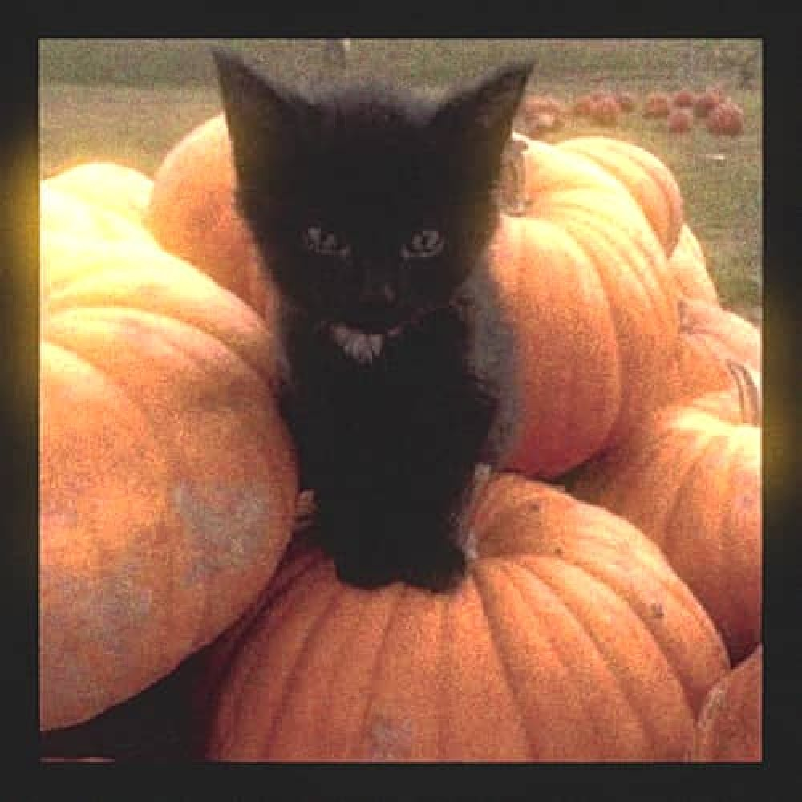

Do you like cute cats?
if so, you are IN FOR A TREAT!
or should I say... a can of tuna!
I'm just kitten! haha... no tuna for you.
But furreal, This is a haunted text-based game where your job is to locate your lost cat: "cookie butter"
You have EXACTLY one hour to save her or else the evil pet vetinerian will bake her into a cookie.
BUT THERES A CATCH!
Time moves strangely in this game...
Try your best not to make any claw-ful mistakes because ANYTHING is pawsible in this game!
Choose wisely, as your choices may have consequences that affect the outcome of the story.
Good luck, and have fun!